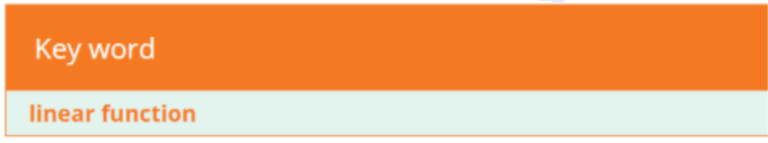
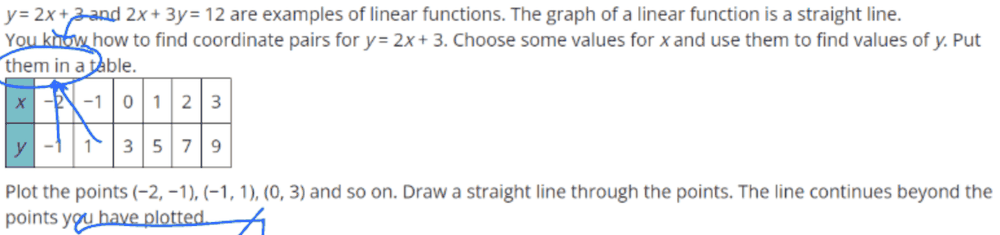
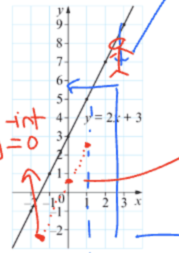
| x | −2 | −1 | 0 | 1 | 2 | 3 |
|---|---|---|---|---|---|---|
| y | −1 | 1 | 3 | 5 | 7 | 9 |
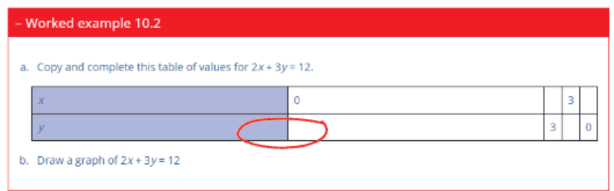
| x | 0 | 1.5 | 3 | 6 |
|---|---|---|---|---|
| y | 4 | 3 | 2 | 0 |
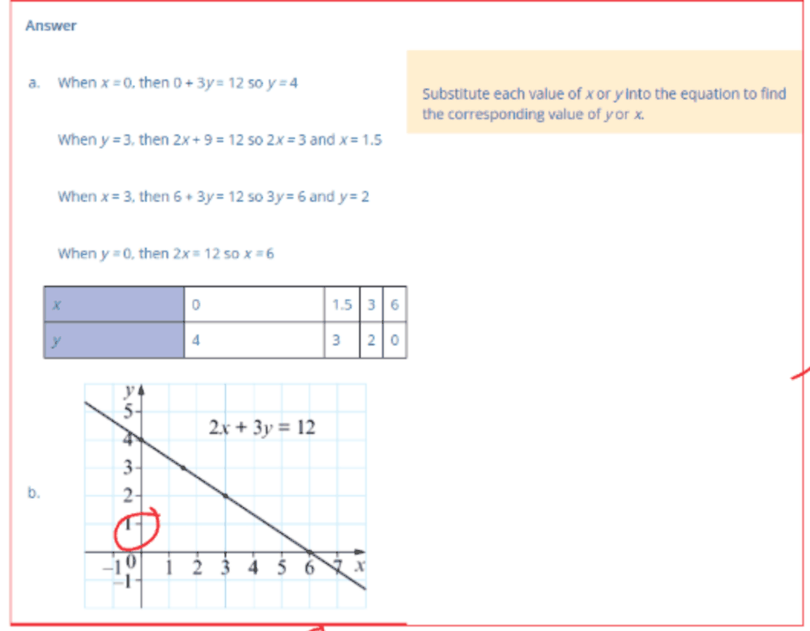
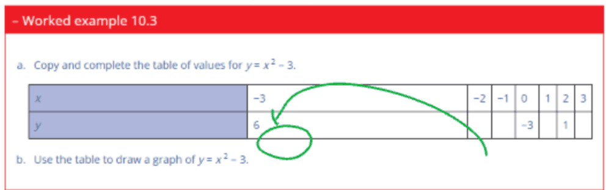
| x | −3 | −2 | −1 | 0 | 1 | 2 | 3 |
|---|---|---|---|---|---|---|---|
| y | 6 | 1 | −2 | −3 | −2 | 1 | 6 |
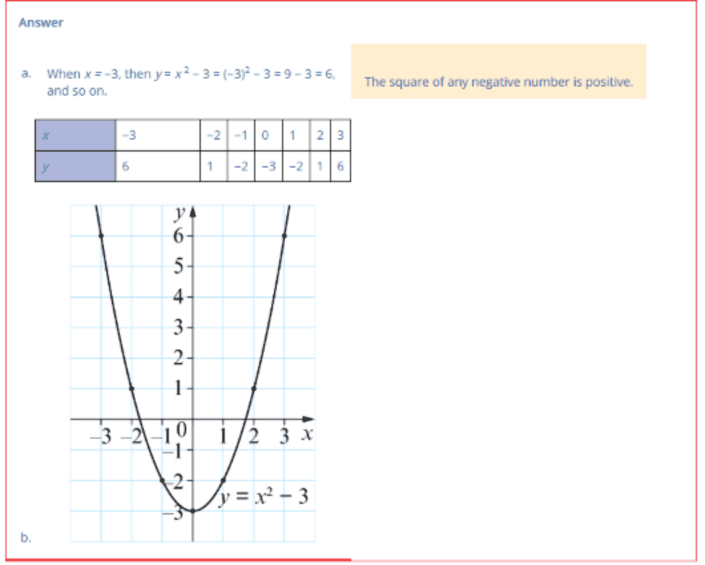
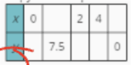
| x | 0 | 1 | 2 | 4 | 6 |
|---|---|---|---|---|---|
| y | 9 | 7.5 | 6 | 3 | 0 |
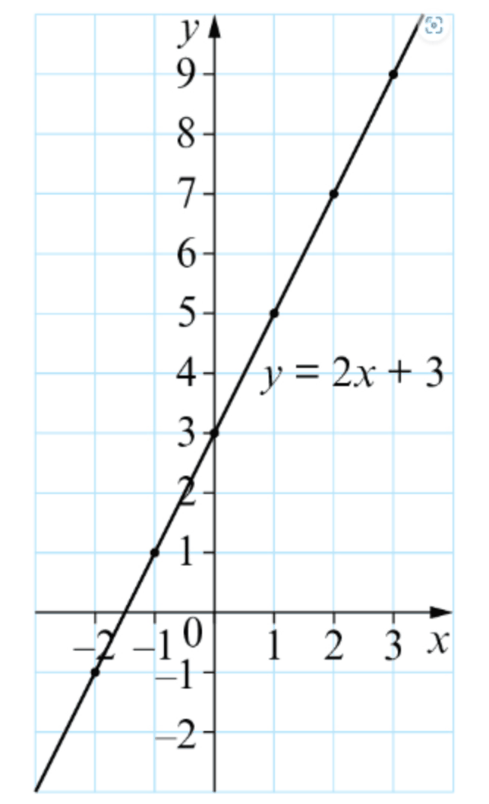
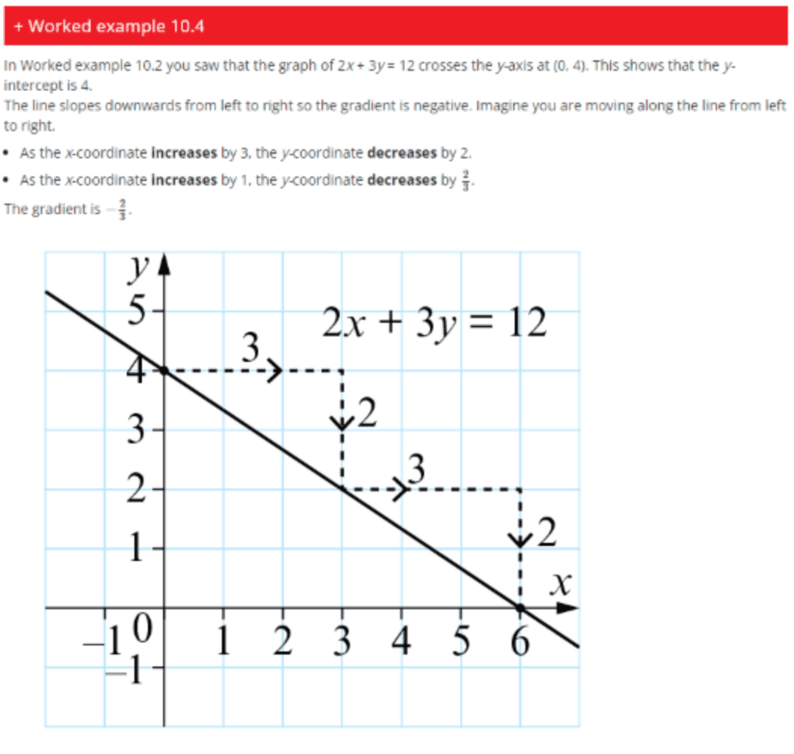
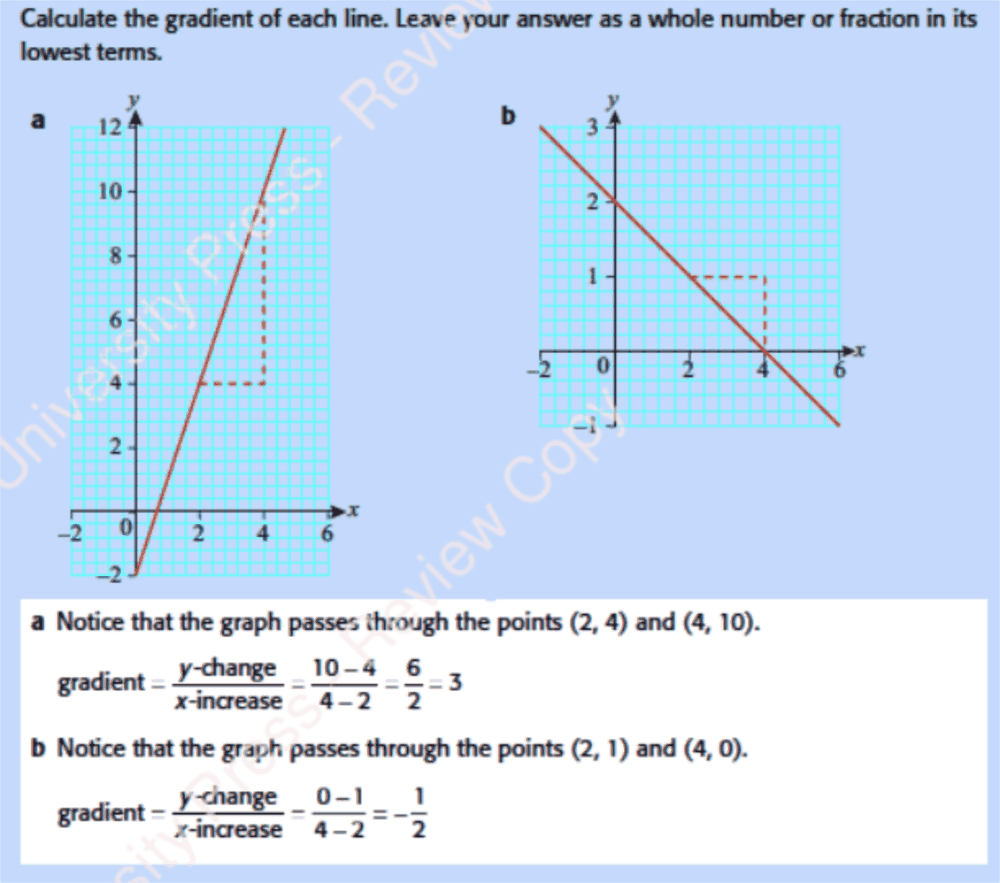
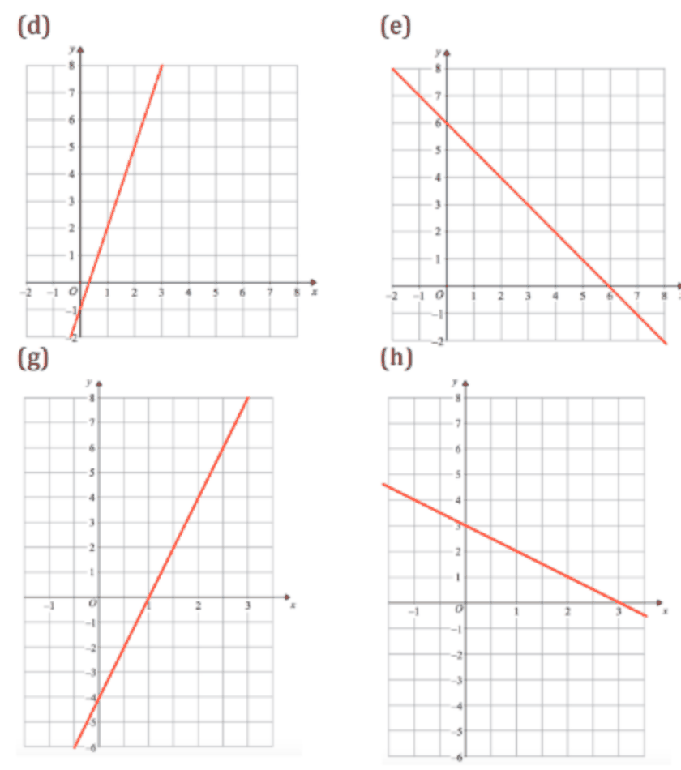
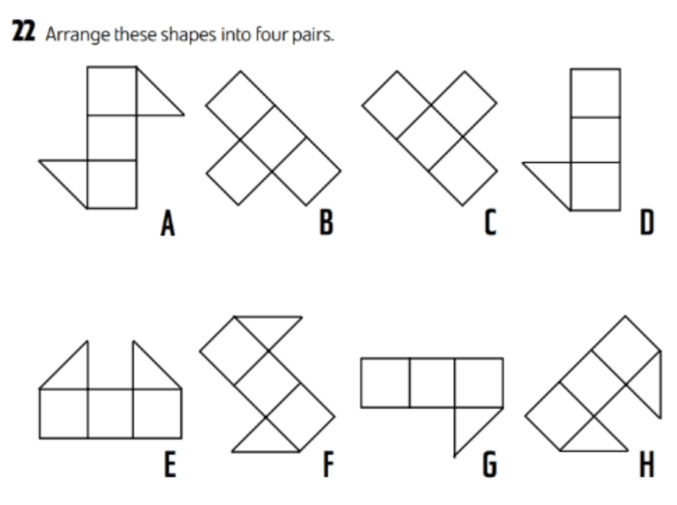
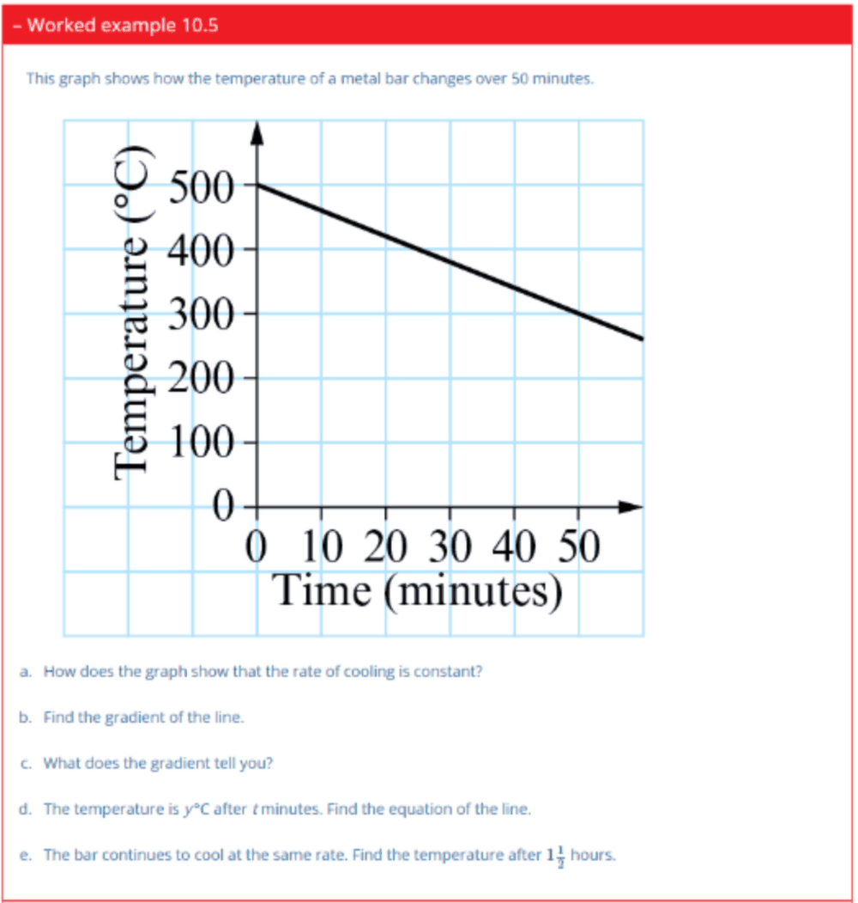
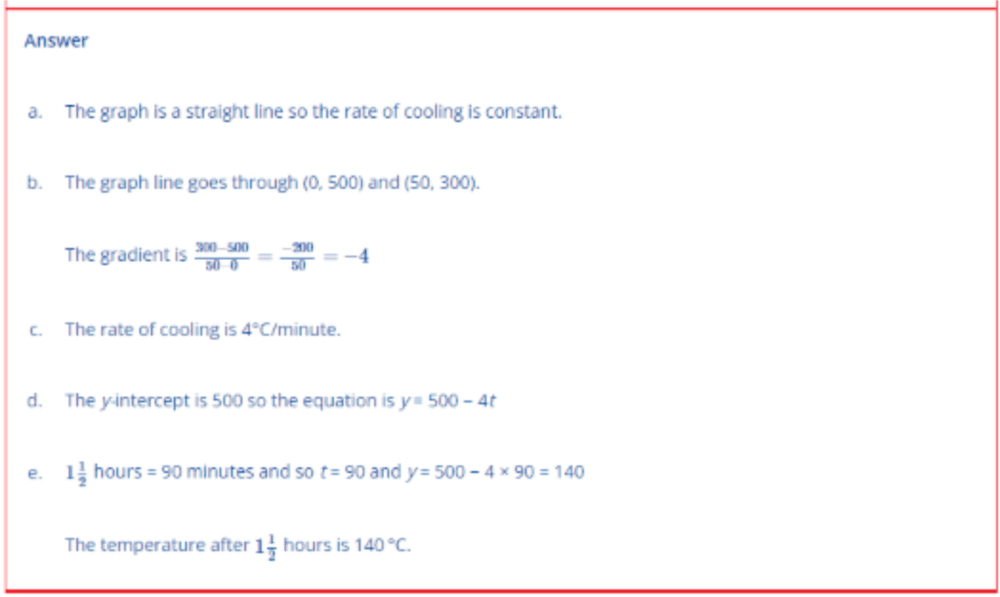
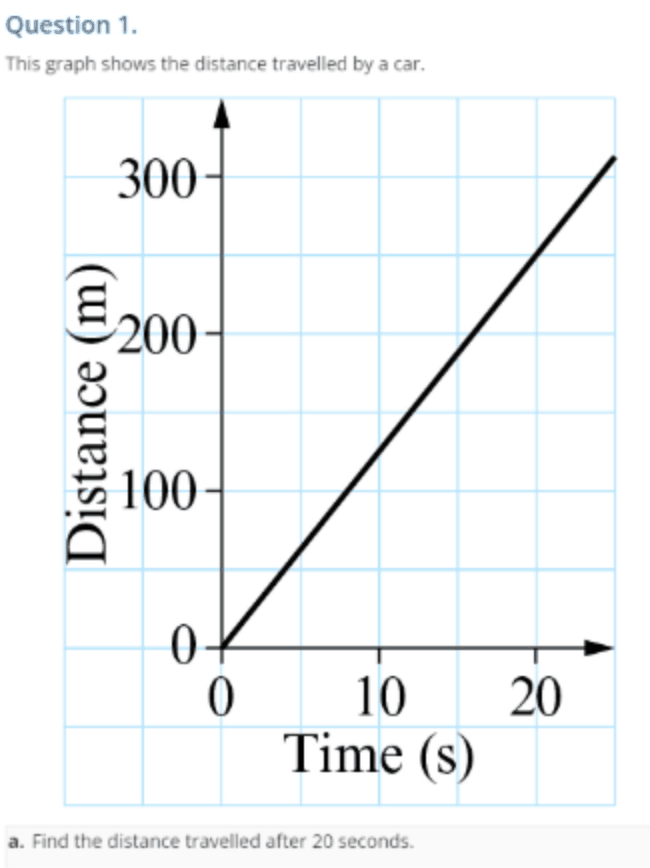